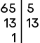
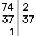
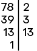
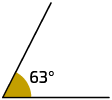
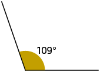
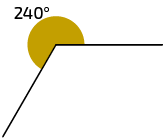
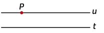
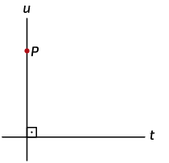
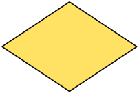
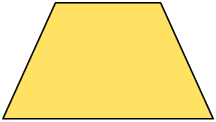

Página LX
d)
e)
f)
Um pouco mais
1. a)
A previsão de despesas com a festa é R$ 377,00.
b)
Serão gatos R$ 121,00 com as bebidas.
c) Para a resolução deste item, é necessário efetuar a subtração da previsão de despesas com a festa (377), calculada no item a, da quantia disposta por Adriano (500). Ou seja:
Portanto, sobrariam R$ 123,00.
2. a)
Portanto, foram necessárias 306 caixas para embalar essas camisetas.
b) ;
Portanto, a diferença de produção entre junho e julho é de 216 camisetas.
3. Primeiro esquema: ; , portanto .
Segundo esquema: . Assim, podemos dizer que e , portanto e .
4. a) Rosana pagou R$ 71,00 pelo combustível e R$ 98,00 pela troca do óleo de seu carro. Logo:
Portanto, Rosana gastou R$ 169,00 nesse posto.
b) A expressão numérica que representa a quantia que restou após Rosana sacar o dinheiro é representada pela expressão . Resolvendo-a, temos:
Ou seja, após sacar o dinheiro, restaram R$ 76,00 a Rosana.
5. Resolução no final da seção Resoluções.
Encerrando a unidade
1. O conteúdo abordado nesta unidade refere-se às operações com números naturais.
2. Resposta pessoal. Possível resposta: adição, subtração, multiplicação e divisão.
3. A) adição e subtração
B) adição ou multiplicação
C) divisão
4. Para a adição, estudamos as propriedades comutativa, associativa e elemento neutro. Para a multiplicação, estudamos as propriedades comutativa, associativa, elemento neutro e distributiva em relação à adição.
5. Primeiro resolvemos os cálculos que estão entre parênteses, realizando as multiplicações e as divisões na ordem em que aparecem e, depois, as adições e subtrações.
6. O resultado da adição do subtraendo com a diferença deve ser igual ao minuendo. O resultado da divisão do produto por um dos fatores deve ser igual ao outro fator.
7. Resposta pessoal. Possível resposta:
O domínio do cálculo mental é de extrema importância, visto que nem sempre é permitido ou viável usar calculadora ao efetuar operações simples.
Unidade 4 Potências e raízes
1. Escrevendo cada produto de fatores iguais na forma de uma única potência, temos:
a)
b)
c)
d)
2. Esta atividade admite várias respostas. Apresentamos uma para cada item.
a) doze elevado ao cubo;
b) vinte e cinco elevado a zero;
c) três elevado à quinta potência;
d) treze elevado à primeira potência;
Página LXI
3. As três próximas linhas da sequência que Amanda escreveu são:
Resposta pessoal. Espera-se que os estudantes percebam que os termos da sequência são quadrados perfeitos e que, a partir do segundo, podemos obter o termo seguinte acrescentando um número ímpar consecutivo à soma anterior.
4. Utilizando a calculadora, obtemos:
a)
b)
c)
d)
5. A: ; 4 quadradinhos
B: ; 9 quadradinhos
C: ; 16 quadradinhos
D: ; 25 quadradinhos
As próximas três figuras dessa sequência, ou seja, figuras E, F e G, seriam quadrados formados por 6, 7 e 8 quadradinhos de lado, respectivamente. Assim, a figura E teria quadradinhos, a figura F teria quadradinhos e a figura G teria quadradinhos.
Resposta pessoal. Sugestão de questões:
Quantos quadradinhos teria a décima figura dessa sequência?; Represente, na forma de potência, a quantidade de quadradinhos que teria a décima figura dessa sequência.
Respostas: A décima figura dessa sequência teria 121 quadradinhos. .
6. a) De acordo com as anotações de Sirlene, a quantidade de bactérias do experimento, após cada uma das medições efetuadas, era:
1ª medição:
2ª medição:
3ª medição:
4ª medição:
Verificamos com isso que a quantidade de bactérias pode ser obtida por uma potência de base 2, na qual o expoente representa a quantidade de medições efetuadas, considerando o ciclo de 20 minutos de reprodução das bactérias. Assim:
80 minutos após o início do experimento, foi realizada a 5ª medição. Logo:
Portanto, havia 32 bactérias após 80 minutos do início do experimento.
160 minutos após o início do experimento, foi realizada a 9ª medição. Logo:
Portanto, havia 512 bactérias após 160 minutos do início do experimento.
b) De acordo com o item anterior, a quantidade de bactérias é determinada por uma potência de base 2. Sendo assim, para descobrir em que momento do experimento havia 2.048 bactérias, devemos determinar em qual das medições esse valor foi encontrado. Para isso, calculamos:
9ª medição:
10ª medição:
11ª medição:
Portanto, havia 2.048 bactérias na 11ª medição, ou seja, após 200 minutos do início do experimento.
7. Esta atividade admite várias respostas. Apresentamos uma para cada item.
a)
b)
c)
d)
e)
f)
8. a) Verdadeira, pois a diferença entre a produção de café no estado da Bahia entre 2019 e 2020 foi 64.007 toneladas, ou seja, aproximadamente toneladas.
b) A produção de café de 2017 e 2018 juntas foi menor do que a de 2019 e 2020 juntas.
9. Calculando os resultados das potências, obtemos:
a)
b)
c)
d)
e)
f)
10. A ficha do item a contém a indicação "um milhão" e, quando representada por meio de algarismos, corresponde ao número 1.000.000, ou seja, , indicado na ficha IV. A ficha do item b contém a indicação "dez mil" e, quando representada por meio de algarismos, corresponde ao número 10.000, ou seja, , indicado na ficha III. A ficha do item c contém a indicação "um trilhão" e, quando representada por meio de algarismos, corresponde ao número 1.000.000.000.000, ou seja, , indicado na ficha II. A ficha do item d contém a indicação "cem bilhões" e, quando representada por meio de algarismos, corresponde ao número 100.000.000.000, ou seja, , indicado na ficha I.
Portanto, a-IV, b-III, c-II, d-I.
11. Decompondo os números, obtemos:
a)
b)
c)
d)
12. Resposta pessoal. Espera-se que os estudantes compartilhem entre si os procedimentos utilizados.
13. As justificativas para os cálculos são:
a) , pois
Página LXII
b) , pois
c) , pois
d) , pois
14. Como a varanda tem formato de quadrado, a quantidade necessária de lajotas para cobrir todo o piso é dada por . Portanto, há 15 lajotas em cada lado dessa varanda.
15. a) Os números quadrados perfeitos maiores do que 50 e menores do que 90 são 64 e 81.
b) O menor número quadrado perfeito de três algarismos é 100.
c) O maior número quadrado perfeito de dois algarismos é 81.
Resposta pessoal. Sugestão de questão:
Qual é o menor número quadrado perfeito de três algarismos distintos?
Resposta:
16. Calculando os itens e determinando as raízes quadradas, obtemos:
a) ;
b) ;
c) ;
17. a)
O comprimento dos lados da peça mede .
b)
O comprimento dos lados da peça mede .
c)
O comprimento dos lados da peça mede .
d)
O comprimento dos lados da peça mede .
18. Os números que correspondem a números quadrados perfeitos são: 25, 36, 100, 144 e 169.
19. a) Resposta pessoal. Espera-se que os estudantes percebam que a sequência de números quadrados perfeitos pode ser obtida adicionando os números da sequência dos números ímpares, ou seja, adicionando o número 3 ao 1º quadrado perfeito, o número 5 ao 2º, o número 7 ao 3º, e assim por diante.
b)
Portanto, os seis próximos números quadrados perfeitos dessa sequência são 100, 121, 144, 169, 196 e 225.
c) Como , então . Sendo assim, temos:
Como , então .
Portanto: A equivale a 2.401, B equivale a 99, C equivale a 101 e D equivale a 2.601.
; ; ; ; . Sim, são todos números quadrados perfeitos.
20. Efetuando os cálculos, obtemos:
a)
b)
c)
d)
e)
f)
g)
h)
Resposta pessoal. Espera-se que os estudantes respondam que, nos exemplos, a raiz quadrada da soma de dois números quadrados perfeitos é diferente da soma das raízes quadradas desses números.
21. Realizando os cálculos, obtemos:
a)
b)
c)
d)
Resposta pessoal. Espera-se que os estudantes percebam que , sendo a e b números naturais, ou seja, estamos explorando a seguinte propriedade: "o produto entre duas raízes com índices iguais é igual à raiz de mesmo índice do produto dos radicados". Neste caso em particular, a e b são números quadrados perfeitos.
22. Os números quadrados perfeitos entre 0 e 100 cuja raiz quadrada também seja um número quadrado perfeito são 1; 16 e 81.
23. De acordo com a estratégia apresentada na atividade, é provável que os estudantes realizem o procedimento descrito em cada item.
a) Como o quadrado perfeito mais próximo de 15 é o 16, podemos afirmar que o número natural mais próximo de é 4, pois .
b) Como o quadrado perfeito mais próximo de 26 é o 25, podemos afirmar que o número natural mais próximo de é 5, pois .
c) Como o quadrado perfeito mais próximo de 98 é o 100, podemos afirmar que o número natural mais próximo de é 10, pois .
24. Como o quadrado perfeito mais próximo de 410 é 400, podemos afirmar que o número natural mais próximo de é 20, pois .
25. Substituindo cada pelo número adequado, temos:
a) ![Imagem de um esquema com uma expressão numérica. Na primeira linha, 5 vezes 3 elevado a 3 mais 36 dividido por raiz quadrada de 16 menos 7. Na segunda linha, 5 vezes 27 mais 36 dividido por 4 menos 7. O 3 elevado a 3 da primeira linha aponta para o número 27 da segunda linha, e a raiz quadrada de 16 da primeira linha aponta para o número 4 da segunda linha. Na terceira linha, 135 mais 9 menos 7. A operação 5 vezes 27 da segunda linha aponta para o número 135 da terceira linha. E o mesmo acontece com 36 dividido por 4 da segunda linha que aponta para o número 9 da terceira linha. Na quarta linha, 144 menos 7. A adição da terceira linha aponta para o número 144 da quarta linha. E a subtração que está na quarta linha aponta para quinta e última linha, onde está o número 137.](../resources/images/resolucao/g24_6sam_d453863Sp_prof.png)
Página LXIII
b) ![Imagem de um esquema, com uma expressão numérica. Na primeira linha, 16 menos 2 elevado a 4 dividido por 4 mais raiz quadrada de 25 vezes 27. Na segunda linha, 16 menos 16 dividido por 4 mais 5 vezes 27. O 2 elevado a 4 aponta para o número 16 da segunda linha; e a raiz quadrada de 25 aponta para o número 5 da segunda linha. Na terceira linha, 16 menos 4 mais 135. A divisão 16 dividido por 4 aponta para o número 4 da terceira linha; e a multiplicação 5 vezes 27 da segunda linha aponta para 135. Na quarta linha, 12 mais 135. A subtração 16 menos 4 da terceira linha aponta para o 12. E a quarta linha aponta para a última linha, onde há o número 147.](../resources/images/resolucao/g24_6sam_u203795Om_prof.png)
c) ![Imagem de um esquema com uma expressão matemática. Na primeira linha, 4 ao quadrado mais 6 vezes raiz quadrada de 36 menos 30 dividido por 5. Na segunda linha, 16 mais 6 vezes 6 menos 6. Há 3 elementos da primeira linha que apontam para a segunda linha, eles são: 4 ao quadrado aponta para 16; raiz quadrada de 36 aponta para 6; e 30 dividido por 5 aponta para outro 6. Na terceira linha, 16 mais 36 menos 6. A multiplicação 6 vezes 6 da segunda linha aponta para 36. Na quarta linha, 52 menos 6. A adição 16 mais 36 da terceira linha aponta para 52. E a quarta linha aponta para a última linha, onde há o número 46.](../resources/images/resolucao/g24_6sam_r261222Ij_prof.png)
26. a) ![Imagem de um esquema com uma expressão numérica. N primeira linha, 29 menos 100 dividido por 5 ao quadrado mais 3 vezes raiz quadrada de 16. Na segunda linha, 29 menos 100 dividido por 25 mais 3 vezes 4. O 5 ao quadrado da primeira linha aponta para o 25 da segunda linha; e a raiz quadrada de 16 aponta para o 4 da segunda linha. Na terceira linha, 29 menos 4 mais 12. O 100 dividido por 25 da segunda linha aponta para o 4 da terceira linha; e o 3 vezes 4 da segunda linha aponta para o 12 da terceira linha. Na quarta linha, 25 mais 12. O 29 menos 4 da terceira linha aponta para o 25 da quarta linha. E a quarta linha aponta para a última linha, onde há o número 37.](../resources/images/resolucao/g24_6sam_i339526Mj_prof.png)
b) ![Imagem de um esquema, com uma expressão numérica. Na primeira linha, abre parênteses, 17 mais 7 ao quadrado, fecha parênteses, mais, abre parênteses, 42 dividido por raiz quadrada de 36. Na segunda linha, abre parênteses, 17 mais 49, fecha parênteses, mais abre parênteses, 42 dividido por 6, fecha parênteses. O 7 ao quadrado aponta para o 49; e a raiz quadrada de 36 aponta para o número 6. Na terceira linha, 66 mais 7. A adição 17 mais 49 aponta para 66; e 42 dividido por 6 aponta para o número 7. E a terceira linha aponta para a última linha, onde há o número 73.](../resources/images/resolucao/g24_6sam_q130934Nk_prof.png)
c) ![Imagem de um esquema, com uma expressão numérica. Na primeira linha, 26 mais abre chaves, abre colchetes, abre parênteses, 26 menos 9 mais 3, fecha parênteses, menos raiz quadrada de 36 dividido por 3 mais3 vezes 18, fecha colchetes, menos 66, fecha chaves. Na segunda linha, 26 mais abre chaves, abre colchetes, abre parênteses, 17 mais 3, fecha parênteses, menos 6 dividido por 3 mais 54, fecha colchetes, menos 66, fecha chaves. Há 3 elementos da primeira linha que apontam para a segunda linha, eles são: 26 menos 9 aponta para 17; raiz quadrada de 36 aponta para 6; e 3 vezes 18 apontam para 54. Na terceira linha, 26 mais abre chaves, abre colchetes, 20 menos 2 mais 54, fecha colchetes menos 66, fecha chaves. Há 2 elementos da segunda linha que apontam para a terceira linha, eles são: 17 mais 3 aponta para 20; e 6 dividido por 3 aponta para 2. Quarta linha, 26 mais, abre chaves, abre colchetes, 18 mais 54, fecha colchetes menos 66, fecha chaves. A subtração 20 menos 2 aponta para o número 18 da quarta linha. Quinta linha, 26 mais abre chaves, 72 menos 66, fecha chaves. A adição 18 mais 54 aponta para o 72 da quinta linha. Sexta linha, 26 mais 6. A subtração 72 menos 66 aponta para o número 6 da sexta linha. E a sexta linha aponta para a última linha, onde está o número 32.](../resources/images/resolucao/g24_6sam_x692134Bc_prof.png)
d) ![Imagem de um esquema com uma expressão numérica. Na primeira linha, abre colchetes, abre parênteses, 2 mais 2 ao cubo, fecha parênteses, ao cubo, menos abre parênteses, 64 menos 2 ao quadrado, fecha parênteses, vezes 2 elevado a 4, fecha colchetes, ao quadrado, mais, abre parênteses, 8 menos 18 dividido por 3 ao quadrado, fecha parênteses, ao quadrado. Na segunda linha, abre colchetes, abre parênteses, 2 mais 8, fecha parênteses, ao cubo, menos abre parênteses, 64 menos 4, fecha parênteses, vezes 16, fecha colchetes, ao quadrado, mais, abre parênteses, 8 menos 18 dividido por 9, fecha parênteses, ao quadrado. Há 4 elementos da primeira linha que apontam para a segunda linha, eles são: 2 ao cubo aponta para 8; 2 ao quadrado aponta para 4; 2 elevado a 4 aponta para 16; e 3 ao quadrado aponta para 9. Na terceira linha, abre colchetes, 10 ao cubo menos 60 vezes 16, fecha colchetes, ao quadrado, mais, abre parênteses, 8 menos 2, fecha parênteses, ao quadrado. Há 3 elementos da segunda linha que apontam para a terceira linha, eles são: 2 mais 8 aponta para 10; 64 menos 4 aponta para 60; 18 dividido por 9 aponta para 2. Na quarta linha, abre colchetes, 1000 menos 960, fecha colchetes, ao quadrado, mais 6 ao quadrado. Há 3 elementos da terceira linha que apontam para a quarta linha, eles são: 10 ao cubo aponta para 1000 ; 60 vezes 16 aponta para 960; e 8 menos 2 aponta para 6. Na quinta linha, 40 ao quadrado mais 36. Há 2 elementos da quarta linha que apontam para a quinta linha, eles são: 1000 menos 960 aponta para 40; e 6 ao quadrado aponta para 36. Na sexta linha, 1600 mais 36. O 40 ao quadrado da quinta linha está apontando para o 1600. E a sexta linha aponta para a última, onde há o número 1636.](../resources/images/resolucao/g24_6sam_h459448Wm_prof.png)
27. a-III; b-I; c-II
I)
II)
III)
Um pouco mais
1. Substituindo cada pela potência de base 10 adequada, obtemos:
a)
b)
c)
d)
2. a)
A sequência numérica obtida é 1, 3, 5, 7.
b)
A sequência numérica obtida é 1, 1, 1, 1.
3. a) ; ;
; ;
; ;
; ;
;
b) Sim, pois:
; ; ; ; ;
; ; ; .
4. A frase do item a (o dobro de oito) transcrita para a linguagem matemática, fica , expressão apresentada no item IV. A frase do item b (o quadrado de oito) transcrita para a linguagem matemática, fica , expressão apresentada no item III. A frase do item c (a metade de oito) transcrita para a linguagem matemática, fica ou , expressão apresentada no item I. A frase do item d (dois elevado à oitava potência) transcrita para a linguagem matemática, fica , expressão apresentada no item II.
Portanto, a-IV, b-III, c-I, d-II.
5. Escrevendo os números em ordem crescente, temos:
6. a) Desenvolvendo a expressão, temos:
Como , o deve ser substituído pelo símbolo .
Página LXIV
b) Desenvolvendo a expressão, temos:
Como , o deve ser substituído pelo símbolo .
c) Desenvolvendo a expressão, temos:
Como , o deve ser substituído pelo símbolo .
Um pouco mais
Encerrando a unidade
1. Os conteúdos abordados nesta unidade foram potenciação e radiciação.
2. Resposta pessoal. Espera-se que os estudantes escrevam que a multiplicação representa uma adição de parcelas iguais e a potenciação, uma multiplicação de fatores iguais.
3. Possível resposta:
A raiz quadrada de um número a é um número b não negativo que elevado ao quadrado é igual a a.
4. Possível resposta:
Números quadrados perfeitos são aqueles cuja raiz quadrada é um número natural.
5. Possível resposta:
Primeiro resolvemos o que está entre parênteses. Em seguida, as potências e as raízes, as multiplicações e as divisões. Por fim, as adições e subtrações, sempre na ordem em que aparecem.
6. Resposta pessoal. Possível resposta:
As potências de base 10 podem ser utilizadas para facilitar a leitura e a escrita de números grandes.
Unidade 5 Múltiplos e divisores
1. Os números 96, 120, 216 e 168 são múltiplos de 8, pois, ao dividi-los por 8, obtemos resto zero. Então, os números múltiplos de 8 encontram-se nos itens: a, c, d, f.
2. Esta atividade permite várias respostas. Apresentamos algumas delas para cada item.
a) Múltiplos de 4: 0, 4, 8, 12 ...
b) Múltiplos de 5: 0, 5, 10, 15 ...
c) Múltiplos de 7: 0, 7, 14, 21 ...
d) Múltiplos de 10: 0, 10, 20, 30.
e) Múltiplos de 13: 0, 13, 26, 39.
f) Múltiplos de 15: 0, 15, 30, 45.
3. a) Falsa, pois 192 não é múltiplo de 9.
b) Falsa, pois 192 não é múltiplo de 36.
c) Verdadeira, pois 192 é múltiplo de 12.
4. a) Considerando que Marlene recebe R$ 160,00 por dia de trabalho e que, em um mês, ela trabalhou 22 dias, podemos efetuar para determinar quantos reais Marlene recebeu nesse mês. Logo, .
Portanto, Marlene recebeu R$ 3.520,00 no mês em que trabalhou 22 dias.
b) Como nessa sorveteria há 9 tipos de cobertura e 7 sabores de sorvete, podemos efetuar para resolver esse problema, descobrindo, assim, a quantidade de combinações possíveis para o preparo de um sundae. Sendo assim, .
Portanto, para preparar um sundae, podem ser feitas 63 combinações com diferentes coberturas e sabores de sorvete.
3.520 é múltiplo de 22 e de 160, pois .
63 é múltiplo de 9 e 7, pois .
5. As caixas referentes às alternativas a e c podem ser utilizadas pelo apicultor de maneira que não falte espaço para armazenar os potes de mel e não sobrem lugares vazios nas caixas, pois:
6. a) Como foram inscritos de 250 a 260 atletas, temos as seguintes quantidades para analisar:
250, 251, 252, 253, 254, 255, 256, 257, 258, 259 e 260.
Analisando cada quantidade, concluímos que a quantidade exata é 252 atletas, pois 252 é o único múltiplo de 12 entre os números determinados.
b) Como , concluímos que haverá 21 equipes participantes.
7. Resposta pessoal. Dois exemplos de possíveis questões que os estudantes podem elaborar são:
"Carlos tem um pedaço de madeira em formato retangular medindo de largura e de comprimento. Sabendo que ele deseja construir banquinhos que tenham o assento com a medida dos lados igual a , quantos assentos para os banquinhos ele vai poder fazer, no máximo?";
Resposta: 6 assentos
"Se os acentos dos banquinhos tivessem de medida de comprimento dos lados, seria possível construir uma quantidade de assentos iguais usando toda a madeira apresentada? Por quê?".
Resposta: Não, pois 180 não é múltiplo de 37.
8. Esta atividade tem várias respostas. Apresentamos algumas delas para cada item.
a) Divisores de 15: 1, 3, 5, 15.
Página LXV
b) Divisores de 18: 1, 2, 3, 6, 9, 18.
c) Divisores de 32: 1, 2, 4, 8, 16, 32.
d) Divisores de 34: 1, 2, 17, 34.
9. a) Sim, pois . Sim, pois a divisão de 72 por 4 é exata.
b) Sim, pois . Sim, pois a divisão de 72 por 6 é exata.
c) Não, pois 10 não é divisor de 72. Não, pois a divisão de 72 por 10 não é exata.
d) Sim, pois . Sim, pois a divisão de 72 por 8 é exata.
10. Efetuando o cálculo, temos .
a) 518 é divisível por 14.
b) 14 é divisor de 518.
c) 518 é múltiplo de 14.
11. É possível construir uma pilha com a medida de altura igual a com o cubo cuja aresta mede , pois . Assim, é possível construir uma pilha com a mesma medida de altura daquela construída por Leila com o cubo representado no item b.
12. Esta atividade admite várias respostas. Apresentamos algumas delas a seguir.
Ricardo poderá organizar 2 fileiras com 15 bonecos em cada uma.
Ricardo poderá organizar 15 fileiras com 2 bonecos em cada uma.
Ricardo poderá organizar 6 fileiras com 5 bonecos em cada uma.
Ricardo poderá organizar 5 fileiras com 6 bonecos em cada uma.
13. a) No item I, pois todos os valores que estão nesse item, ao serem divididos por 3, têm o resto igual a zero. Portanto, a divisão é exata.
b) Os números apresentados no item II divisíveis por 7 e por 3 ao mesmo tempo são 21, 42, 63, 84 e 105, pois, ao serem divididos por 7 ou por 3, o resto é igual a zero.
14. Substituindo cada por um dos números apresentados, obtemos as seguintes considerações:
a) 52 é divisível por 13.
b) 11 é divisor de 88.
c) 96 é múltiplo de 16.
d) 90 é divisível por 15.
e) 7 é fator de 49.
Resposta pessoal. Esta atividade admite várias respostas. Apresentamos algumas delas a seguir.
3 é divisor de 243.
120 é divisível por 5.
15 é fator de 90.
15. • Corresponde a um cilindro, pois como as figuras geométricas se repetem de 4 em 4, dividimos 637 por 4 e, como o resultado obtido no resto é 1, encontramos a figura referente a esse número, ou seja, 1ª figura da sequência.
Efetuando o cálculo , obtemos o resto da divisão igual a 3 e a figura geométrica da sequência que se refere a essa posição é a pirâmide.
Corresponde a um cubo, pois 768 é um número divisível por 4. Portanto, corresponde à quarta posição das figuras da sequência.
Realizando o cálculo , obtemos o resto da divisão igual a 2. A figura geométrica que se refere a essa posição na sequência é o cone.
Realizando o cálculo , obtemos o resto da divisão igual a 3. A figura geométrica que se refere a essa posição na sequência é a pirâmide.
Corresponde a um cubo, pois 832 é um número divisível por 4. Portanto, corresponde à quarta posição da figura geométrica da sequência.
16. Resposta pessoal. Sugestão de problema:
Ana ganhou 232 balas e pretende distribuí-las igualmente para seus 29 colegas de sala de aula. Há possibilidade de Ana fazer essa divisão igualmente entre os colegas? Justifique sua resposta.
Resposta: Sim, há possibilidade de Ana dividir as balas igualmente entre os colegas, pois é uma divisão exata, ou seja, . Portanto, cada colega de Ana vai receber 8 balas.
17. Utilizando os critérios de divisibilidade, podemos concluir que:
a) o número 254 é divisível por 2;
b) o número 148 é divisível por 2 e 4;
c) o número 369 é divisível por 3;
d) o número 3.648 é divisível por 2, 3 e 4;
e) o número 524 é divisível por 2 e 4;
f) o número 408 é divisível por 2, 3 e 4.
18. Os números das fichas divisíveis por 2 e por 3 ao mesmo tempo são 114, 522, 606, 738 e 852.
a) Os números das fichas divisíveis por 6 são 114, 522, 606, 738 e 852.
b) Resposta pessoal. Espera-se que os estudantes respondam que os números divisíveis por 6 são os mesmos que os números divisíveis por 2 e 3 ao mesmo tempo.
c) Resposta pessoal. Espera-se que os estudantes respondam que a pessoa deve verificar se determinado número é divisível por 2 e por 3 ao mesmo tempo. Se isso ocorrer, então esse número é divisível por 6.
d) Um número natural será divisível por 6 quando ele for divisível por 2 e por 3.
19. a) Entre os números apresentados, os divisíveis por 5 são 310, 415, 565 e 1.020, pois, após realizada a divisão por 5, obtém-se resto zero.
b) Um número natural será divisível por 5 quando o último algarismo for 0 ou 5.
20. Esse número não é divisível por 3 e 6. Espera-se que os estudantes respondam que esse número não é divisível por 3, pois a soma dos valores absolutos dos algarismos é 8 e 8 não é divisível por 3. Consequentemente, também não é divisível por 6, pois, para isso, ele deveria ser divisível por 2 e por 3 ao mesmo tempo.
Página LXVI
21. a) Sim, pois, ao realizarem as divisões dos números apresentados, constatarão que seus três últimos algarismos, na ordem que parecem, também são divisíveis por 8, pois o resto da divisão é igual a zero.
b) Sim, pois os números 1.376 e 77.248 são divisíveis por 8, e os números formados pelos três últimos algarismos destes números na ordem em que aparecem, 376 e 248, também são divisíveis por 8.
c) Os números divisíveis por quatro são 2.128, 45.336, 3.456 e 72.568, ou seja, dos números divisíveis por 8, todos são também divisíveis por 4.
d) Um número natural com quatro ou mais algarismos é divisível por 8 quando seus três últimos algarismos, na ordem em que aparecem, formam um número que é múltiplo de 8.
22. a) Resposta pessoal. Espera-se que os estudantes respondam que um número natural e a soma dos valores absolutos de seus algarismos têm o mesmo resto quando divididos por 9.
b) Resposta pessoal. Espera-se que os estudantes respondam que adicionariam os valores absolutos dos algarismos do número e verificaria se a soma obtida é divisível por 9. Caso seja, então o número é divisível por 9.
c) Um número natural é divisível por 9 quando a soma dos valores absolutos de seus algarismos for múltiplo de 9.
23. Os números divisíveis por 9 que podem ser formados com os algarismos 3, 7 e 8 são 378, 387, 738, 783, 837 e 873.
24. Resposta pessoal. Esta atividade permite várias respostas. Apresentamos uma delas:
10, 20, 30, 40, 50, 60, 70, 80, 90 e 100.
a) Sim, pois o resto da divisão de um número natural múltiplo de 10 por 10 é zero. Assim, esse número é divisível por 10.
b) Resposta pessoal. Espera-se que os estudantes digam que todos os múltiplos de 10 são números naturais terminados em zero.
c) Um número natural será divisível por 10 quando o último algarismo for 0.
25. a) Os números apresentados na atividade que são divisíveis por 100 são:
500, pois .
1.300, pois .
12.600, pois .
89.000, pois .
b) Um número natural é divisível por 100 quando os dois últimos algarismos forem 0.
c) Sim, pois todo número natural divisível por 10 termina em 0, e todo número natural divisível por 100 termina em 00.
26. Resposta pessoal. Espera-se que os estudantes digam que é possível escrever . Assim, 1.000 é um divisor de 45.000. Logo, 45.000 é divisível por 1.000.
a) Os números apresentados que são divisíveis por 1.000 são: 6.000, 15.000, 27.000 e 96.000.
b) Um número natural é divisível por 1.000 quando os três últimos algarismos forem 0.
27. a) Sim, pois 2024 não termina em 00 e a divisão dele por 4 é exata.
b) 2028; 2032; 2036
c) Resposta pessoal. Espera-se que os estudantes digam que o aniversário pode ser comemorado no dia 28 de fevereiro ou no dia 1º de março.
28. Os números primos compreendidos entre 1 e 150 são:
2, 3, 5, 7, 11, 13, 17, 19, 23, 29, 31, 37, 41, 43, 47, 53, 59, 61, 67, 71, 73, 79, 83, 89, 97, 101, 103, 107, 109, 113, 127, 131, 137, 139, 149.
29. Os quatro números primos compreendidos entre 1 e 10 são: 2, 3, 5 e 7. O produto entre eles é 210.
30. Os divisores de 130 são: 1, 2, 5, 10, 13, 26, 65 e 130.
a) Entre os divisores de 130, os números primos são: 2, 5 e 13; os números compostos são: 10, 26, 65 e 130.
b) O maior divisor primo de 130 é o número 13. O menor divisor primo é o número 2.
c) O maior divisor composto de 130 é o próprio número 130.
31. a) 
Utilizando a regra prática, obtemos:
b) 
Utilizando a regra prática, obtemos:
c) 
Utilizando a regra prática, obtemos:
32. Os números primos menores do que 40 são 2, 3, 5, 7, 11, 13, 17, 19, 23, 29, 31 e 37. Como a soma das idades é igual a 40 e Paulo é mais velho que Ana, nessas condições, há 3 possibilidades para as idades de Paulo e Ana.
Paulo: 37 anos; Ana: 3 anos.
Paulo: 29 anos; Ana: 11 anos.
Paulo: 23 anos; Ana: 17 anos.
Página LXVII
33. a) Os números primos menores do que 200 são:
2, 3, 5, 7, 11, 13, 17, 19, 23, 29, 31, 37, 41, 43, 47, 53, 59, 61, 67, 71, 73, 79, 83, 89, 97, 101, 103, 107, 109, 113, 127, 131, 137, 139, 149, 151, 157, 163, 167, 173, 179, 181, 191, 193, 197, 199.
Portanto, o maior número primo menor do que 200 é o número 199.
b) Os divisores de 182 são 1, 2, 7, 14, 13, 26, 91 e 182.
Portanto, o maior divisor primo de 182 é o número 13.
34. a) A fatoração do número 100 resulta em .
Portanto, .
b) A fatoração do número 324 resulta em .
Portanto, .
c) A fatoração do número 720 resulta em .
Portanto, .
d) A fatoração do número 1.575 resulta em .
Portanto, .
35. Decompondo o número 125 em fatores primos, temos , ou seja, esse é um número que pode ser decomposto em três fatores primos iguais. Decompondo o número 121, temos , ou seja, esse é um número que pode ser decomposto em dois fatores primos iguais. Decompondo o número 110 em fatores primos, temos , ou seja, esse é um número que pode ser decomposto em três fatores primos distintos.
Portanto, associando os itens adequadamente, obtemos a-I, b-III e c-II.
36. Os números 97, 151, 157 e 167 só admitem o número 1 e eles mesmos como seus divisores. Portanto, são números primos. Os números 111, 143 e 161 têm outros divisores além do número 1 e deles próprios. Portanto, são números compostos.
Resposta pessoal. Sugestão de resposta:
409 (primo), 601 (primo) e 830 (composto).
Um pouco mais
1. De acordo com os números apresentados, temos as seguintes considerações:
a) São múltiplos de 4 os números 12, 32 e 76.
b) Não são múltiplos de 3 os números 14, 32, 70, 76 e 85.
c) São múltiplos de 2 e 3 ao mesmo tempo os números 12 e 42.
2. Na lousa, estão registrados os algarismos 7, 9 e 5. Para que um número seja divisível por 9, a soma dos valores absolutos de seus algarismos deve ser divisível por 9. Então, adicionando esses algarismos, obtemos o resultado 21. O próximo número após 21 que é divisível por 9 é 27. Logo, . Portanto, o algarismo que foi apagado da lousa só pode ser o 6.
3. a) O número 4.374 é divisível por 3, pois e 18 é múltiplo de 3.
b) O número 93.701 não é divisível por 5, pois não termina em 0 ou 5.
c) 4 é divisor de 3.924, pois os dois últimos algarismos, na ordem em que aparecem, formam um número que é múltiplo de 4.
d) 34.020 é divisível por 2, pois, seu último algarismo é 0, ou seja, um número par.
e) 6 é divisor de 10.458, pois, além de 10.458 ser divisível por 2 (trata-se de um número par), também é divisível por 3 (a soma dos valores absolutos de seus algarismos é múltiplo de 3, ou seja, ).
f) 31.620, apesar de ser divisível por 10, pois seu último algarismo é 0, não é divisível por 9, pois a soma dos valores absolutos de seus algarismos não é múltiplo de 9, ou seja, .
Portanto, são verdadeiras as afirmações a, c, d e e.
4. O único número primo par é o 2 e o maior número primo de dois algarismos é o 97, assim, .
Portanto, a alternativa correta é a c.
5. Determinando os divisores de 72, temos: 1, 2, 3, 4, 6, 8, 9, 12, 18, 24, 36 e 72. Determinando os divisores de 126, temos: 1, 2, 3, 6, 7, 9, 14, 18, 21, 42, 63 e 126. Os divisores comuns de 72 e 126 são: 1, 2, 3, 6, 9 e 18, sendo o número 18 o maior entre eles. Como 18 é múltiplo de 2 e 3 ao mesmo tempo, a alternativa correta é a c.
Encerrando a unidade
1. Os conteúdos abordados nesta unidade foram múltiplos, divisores, critérios de divisibilidade, números primos e números compostos.
2. Resposta pessoal. Esta atividade permite várias respostas. Apresentamos algumas delas.
Múltiplos de 12: 0, 12, 24, 36, 48, 60, 72, 84, 96, 108 ...
Divisores de 12: 1, 2, 3, 4, 6 e 12.
3. Um número divisível apenas por 1 e por ele mesmo é chamado número primo. Um número divisível por mais de dois números é chamado número composto.
4. Resposta pessoal. Espera-se que os estudantes respondam que os critérios de divisibilidade ajudam na realização dos cálculos, tornando-os mais fáceis e rápidos.
5. Possível resposta:
Podemos verificar que um número é primo ou composto utilizando o Crivo de Eratóstenes ou fazendo a decomposição do número em fatores primos.
6. A decomposição em fatores primos pode ser feita de uma única maneira, desconsiderando a ordem dos fatores.
Unidade 6 Frações
1. Em cada uma das figuras, a parte colorida de amarelo representa:
a) da figura.
b) da figura.
2. a) Fração decimal: ; quatro décimos.
b) Fração decimal: ; vinte e sete centésimos.
3. a) Na bandeja, há 55 docinhos. Entre esses docinhos, 25 são beijinhos e 30 são brigadeiros.
Página LXVIII
b) • A quantidade de beijinhos representa do total de docinhos.
A quantidade de brigadeiros representa do total de docinhos.
c) A razão que representa a quantidade de beijinhos em relação à quantidade de brigadeiros é .
4. a) O quilate indica a quantidade de partes de ouro puro contida em 24 partes da liga. Portanto, 24 quilates, que indica uma porção inteira, podem ser representados pela fração .
b) Espera-se que os estudantes citem, por exemplo, metais como prata, cobre, paládio, platina e zinco.
5. a) Como a prova tinha 50 questões no total, temos:
Portanto, havia 20 questões de Matemática.
b) Do total de questões, representam as questões de Matemática.
c) Nessa prova, 15 questões eram de Português e 20 de Matemática, ou seja, estão na razão de 15 para 20. Portanto, indicamos essa razão por .
6. De acordo com as figuras geométricas espaciais apresentadas, a fração:
representa a quantidade de poliedros.
representa a quantidade de prismas.
representa a quantidade de não poliedros.
representa a quantidade de pirâmides.
7. Calculando a quantia, em reais, correspondente a cada um dos itens, temos:
a) de R$ 32,00 é R$ 16,00, pois e .
b) de R$ 32,00 é R$ 12,00, pois e .
c) de R$ 32,00 é R$ 28,00, pois e .
8. a) Gastos com a fatura de água: de R$ 180,00 representa R$ 120,00, pois e .
Prestação do eletrodoméstico: de R$ 180,00 representa R$ 36,00, pois e .
Portanto, foram gastos R$ 120,00 para pagar a fatura de água e R$ 36,00 para pagar a prestação do eletrodoméstico.
b)
Portanto, ao final, sobraram R$ 24,00 para Mariana.
9. a) A fração que representa a razão entre a quantidade de estudantes e a de idosos é .
b) Para determinar quantos idosos há na instituição, fazemos:
Portanto, há 40 idosos na instituição.
c) Resposta pessoal. Espera-se que os estudantes respondam que ações voluntárias como essa são importantes para ajudar pessoas ou grupos sociais, não apenas porque auxiliam em suas necessidades básicas, como alimentação, mas porque proporcionam alegria com as trocas de experiências e de conhecimentos.
10. a) A cada 3 estudantes que cursam Espanhol, 7 cursam Inglês.
b) A quantidade de estudantes matriculados no curso de Espanhol e a quantidade total de estudantes matriculados nos dois cursos estão entre si na razão de . Assim, de 100 é igual a 30, pois e . Já a quantidade de estudantes matriculados no curso de Inglês e a quantidade total de estudantes matriculados nos dois cursos estão entre si na razão de . Assim, de 100 é igual a 70, pois e .
Portanto, são 30 matrículas no curso de Espanhol e 70 matrículas no curso de Inglês.
11. Resposta pessoal. Sugestão de questões:
Qual fração representa a razão entre a quantidade de árvores frutíferas em relação à quantidade total de árvores nesse bairro?
Resposta: .
Qual fração representa a relação entre a quantidade de árvores ornamentais em relação à quantidade total de árvores?
Resposta: .
12. Utilizando uma calculadora, obtemos 468 como resultado. Resposta pessoal.
Esta atividade admite várias respostas. Apresentamos uma delas:
Primeiro, dividimos 702 pelo denominador 3 e obtemos 234. Em seguida, multiplicamos o resultado obtido por 2, obtendo o resultado 468.
13. a) e
Logo, ao caminhar da extensão da pista, André percorre .
b) Resposta pessoal. Sugestão de questão:
O caminho da casa de Marcos até a escola mede . Sabendo que Marcos já caminhou de todo o percurso, quantos metros ele ainda precisa percorrer para chegar à escola?
Resposta: Marcos ainda precisa percorrer para chegar à escola.
Página LXIX
14. Resposta pessoal. Sugestão de problemas:
Que fração representa a quantidade de líquido contida no interior do recipiente A? Qual é a quantidade de líquido, em mililitros, contida nesse recipiente?
Resposta: ; .
Que fração representa a quantidade de líquido contida no interior do recipiente B? Qual é a quantidade de líquido, em mililitros, contida nesse recipiente?
Resposta: ; .
15. As frações classificadas incorretamente como próprias são , e . As frações classificadas incorretamente como impróprias são e .
16. Calculando cada uma das frações aparentes, temos:
17. Classificando as frações de cada um dos itens, temos:
a) é uma fração própria, ou seja, o numerador é menor do que o denominador. Nesse caso, representa um número menor do que 1. Portanto, .
b) é uma fração imprópria, ou seja, o numerador é maior do que o denominador. Nesse caso, representa um número maior do que 1. Portanto, .
c) é uma fração imprópria, ou seja, o numerador é maior do que o denominador. Nesse caso, representa um número maior do que 1. Portanto, .
d) é uma fração própria, ou seja, o numerador é menor do que o denominador. Nesse caso, representa um número menor do que 1. Portanto, .
e) é uma fração própria, ou seja, o numerador é menor do que o denominador. Nesse caso, representa um número menor do que 1. Portanto, .
f) é uma fração própria, ou seja, o numerador é menor do que o denominador. Nesse caso, representa um número menor do que 1. Portanto, .
18. Escrevendo a fração correspondente a cada um dos itens, temos:
a) , ou seja, uma fração imprópria.
b) , ou seja, uma fração imprópria e aparente, pois o numerador (4) é múltiplo do denominador (2).
c) , ou seja, uma fração própria.
19. Representando a parte colorida de amarelo em cada item, temos:
a) a fração e o número misto .
b) a fração e o número misto .
20. As frações que representam as letras A e B, de acordo com a reta numérica, são números que estão entre 1 e 2, com A menor do que B. Sendo assim, e . Portanto, .
21. Possíveis respostas:
a)
b)
c)
d)
22. Para cada um dos itens, determinamos a fração imprópria correspondente para, em seguida, calcular a quantidade de horas.
a) . Logo, de é , pois e . Portanto 30 horas.
b) . Logo, de é , pois e . Portanto 44 horas.
c) . Logo, de é , pois e . Portanto 42 horas.
d) . Logo, de é , pois e . Portanto 36 horas.
23. Esta atividade admite várias respostas. Apresentamos uma delas para cada item.
Página LXX
a) As frações equivalentes que representam a parte colorida de amarelo na figura são e .
b) As frações equivalentes que representam a parte colorida de amarelo na figura são e .
24. Substituindo cada letra pelo respectivo número, temos:
![Imagem da seguinte igualdade: início de fração, numerador: 10 denominador: 9, fim de fração, igual a, início de fração, numerador: 20 denominador: 18, fim de fração, igual a, início de fração, numerador: 60 denominador: 54, fim de fração. Uma seta indica dividido por 2, sai do número 20 e aponta para o 10. Outra seta indica dividido por 2 e sai do número 18 e aponta para o 9. Outra seta indica vezes 3, sai do número 20 e aponta para 60. Uma última seta indica vezes 3, sai do número 18 e aponta para 54.](../resources/images/resolucao/g24_6sam_j332353Mo_prof.png)
Portanto, , e .
25. a) Os gastos iguais foram referentes à fatura de energia elétrica e aos serviços de manutenção, pois as frações e são equivalentes.
b) fatura de energia elétrica:
matéria-prima:
serviços de manutenção:
Portanto, foram destinados R$ 370,00 ao pagamento da fatura de energia elétrica, R$ 740,00 à compra de matéria-prima e R$ 370,00 aos serviços de manutenção.
26. As frações que representam a quantidade de páginas lidas por Henrique, em relação ao total de páginas do livro, são e .
27. a) A razão entre a quantidade de informações falsas e verdadeiras avaliadas é .
b) Sim; Espera-se que os estudantes respondam que a razão é equivalente a . Assim, para cada informação falsa, foram publicadas 3 verdadeiras no dia investigado.
c) Resposta pessoal. Espera-se que os estudantes cheguem à conclusão de que é necessário pesquisar as informações publicadas em diferentes fontes, comparando os resultados obtidos em cada uma delas. Também é importante atentar aos veículos de comunicação que divulgam essas informações, verificando se são fontes de dados confiáveis.
28. Simplificando cada uma das frações, obtemos as seguintes frações irredutíveis:
a)
b)
c)
d)
e)
f)
29. Resposta pessoal. Sugestão de questões:
Qual é a jornada diária de trabalho de Beatriz, em horas?
Resposta: 8 horas.
Qual é a jornada diária de trabalho de Gildo, em horas?
Resposta: 8 horas.
Quem tem a maior jornada diária de trabalho: Beatriz ou Gildo? Justifique sua resposta.
Resposta: Beatriz e Gildo têm a mesma jornada diária de trabalho, pois as frações e são equivalentes.
30. Para cada uma dos itens, desenvolvemos a resolução de acordo com o procedimento descrito na atividade.
a) Como e têm resultados diferentes, as frações e não são equivalentes.
b) Como e têm resultados iguais, as frações e são equivalentes.
c) Como e têm resultados iguais, as frações e são equivalentes.
d) Como e têm resultados diferentes, as frações e não são equivalentes.
O numerador é 52. Espera-se que os estudantes expliquem que podem multiplicar o denominador 60 por 13 e dividir o resultado por 15, obtendo o fator 52, que será o numerador da fração.
31. a) Marca A: de 420 é 168, pois e .
Marca B: de 420 é 180, pois e .
Marca C: de 420 é 72, pois e .
Portanto, 168 consumidores preferem a marca A, 180 consumidores preferem a marca B e 72 consumidores preferem a marca C.
b) Os pares de frações equivalentes são e ; e .
32. A parte colorida de amarelo em cada item corresponde a:
a)
b)
33. Simplificando as frações, temos:
; .
a) Sim, ao simplificar as frações, a mesma fração irredutível é obtida.
b) Sim, as frações e são equivalentes, pois equivalem à mesma fração irredutível.
34. a) de R$ 1.200,00 é R$ 800,00, pois e .
de R$ 1.200,00 é R$ 300,00, pois e .
de R$ 1.200,00 é R$ 100,00, pois e .
Portanto, o 1º colocado receberá R$ 800,00, o 2º colocado, R$ 300,00 e o 3º colocado, R$ 100,00.
Página LXXI
b) A fração que representa a quantia recebida pelo:
3º colocado em relação à quantia recebida pelo 1º colocado é .
2º colocado em relação à quantia recebida pelo 1º colocado é .
1º colocado em relação à premiação total é .
c) Simplificando as frações , e , temos:
35. Como os pares de frações têm o mesmo denominador, devemos compará-las analisando o numerador. Assim:
a)
b)
c)
d)
e)
f)
36. Como todas as frações apresentam o mesmo denominador, devemos compará-las analisando o numerador. Assim:
Representando essas frações na reta numérica, temos:
![Imagem de uma reta numérica de 0 a 3. Há 3 marcações entre 0 e 1, espaçadas igualmente. Da mesma forma há outras 3 marcações entre 1 e 2, e entre 2 e 3, todas também espaçadas igualmente. Entre 1 e 2, estão A, B, C, nessa ordem. Junto a letra A está indicado início de fração, numerador: 1 denominador: 4, fim de fração; e junto a letra C está indicado início de fração, numerador: 3 denominador: 4, fim de fração. Entre 1 e 2 estão marcados D, E, F. Junto a letra D está indicado início de fração, numerador: 5 denominador: 4, fim de fração; e junto a letra F está indicado início de fração, numerador: 7 denominador: 4, fim de fração. E entre 2 e 3 estão, G, H, I. Junto a letra I está indicado início de fração, numerador: 11 denominador: 4, fim de fração](../resources/images/resolucao/it5407_6sam_g24_e003_prof.png)
Portanto, ; ; ; ; .
37. a) Como todas as frações têm o mesmo denominador, devemos analisar o numerador de cada uma delas. Logo, Vilma foi a vencedora da partida e Everton ficou em último lugar.
b) Diana: ; 8 fichas
Bruno: ; 14 fichas
Everton: ; 6 fichas
Vilma: ; 30 fichas
Tamires: ; 12 fichas
38. Para cada um dos itens, apresentamos uma possível resposta.
a) A parte colorida em amarelo representa da figura.
b) A parte colorida em amarelo representa da figura.
c) A parte colorida em amarelo representa da figura.
Resposta pessoal. Sugestão de questão:
Analisando as frações obtidas anteriormente, qual das figuras apresenta a maior quantidade de partes coloridas em amarelo?
Resposta: A figura do item b.
39. a) As frações têm denominadores iguais. Logo, comparando os numeradores, temos .
b) Como as frações têm denominadores diferentes, precisamos encontrar frações equivalentes com o mesmo denominador. Para isso:
e
Logo, como , temos .
c) Como as frações têm denominadores diferentes, precisamos encontrar frações equivalentes com o mesmo denominador. Para isso:
Logo, como , temos .
d) Como as frações têm denominadores diferentes, precisamos encontrar frações equivalentes com o mesmo denominador. Para isso:
e
Logo, como , temos .
e) Como as frações têm denominadores diferentes, precisamos encontrar frações equivalentes com o mesmo denominador. Para isso:
e
Logo, como , temos .
f) Como as frações têm denominadores diferentes, precisamos encontrar frações equivalentes com o mesmo denominador. Para isso:
e
Logo, como , temos .
Página LXXII
40. Nessa escola, há mais estudantes cursando o Ensino Fundamental, pois .
41. a) Como as frações têm denominadores diferentes, precisamos encontrar frações equivalentes com o mesmo denominador. Para isso, fazemos:
Agora, como , temos . Portanto, o carro B consumiu menos combustível na viagem.
b) carro A:
carro B:
Portanto, o carro A consumiu de combustível e o carro B, .
42. Todas as frações apresentadas têm denominadores diferentes. Desse modo, devemos determinar frações equivalentes que apresentem o mesmo denominador. Para isso, temos:
Agora, temos as frações , , , e , que apresentam o mesmo denominador. Comparando os numeradores e organizando-as em ordem decrescente, temos:
De acordo com a imagem, a bolinha C atingiu a maior medida de altura ao quicar. Assim, a medida da altura da bolinha C é representada pela fração . A segunda bolinha a atingir a maior medida de altura foi a D. Logo, a medida de sua altura pode ser representada pela fração . A terceira bolinha foi a A, tendo, portanto, essa medida associada à fração . A quarta bolinha foi a B, ou seja, a medida de sua altura pode ser relacionada à fração . Por fim, a quinta e última bolinha foi a E, tendo a medida de sua altura relacionada à fração .
Portanto, concluímos que a bolinha A corresponde à fração ; a bolinha B, à fração ; a C, à ; a D, à ; e a E, à .
43. Esta atividade admite várias respostas. Algumas delas são:
, , .
44. a) • A fração que representa a quantidade de acertos em relação ao total de arremessos realizados por Daniela é .
A fração que representa a quantidade de acertos em relação ao total de arremessos realizados por Cláudia é .
b) Como as frações possuem denominadores diferentes, precisamos encontrar frações equivalentes com o mesmo denominador. Para isso:
e
Agora, como , temos . Portanto, a maior fração é .
c) Daniela, pois a fração correspondente à quantidade de acertos em relação ao total de arremessos feitos por ela foi maior.
45. a) A equipe da escola Atlântica conquistou a maior pontuação até o momento. A equipe da escola Liberdade conquistou a menor pontuação até o momento.
b) Calculando a diferença, temos .
Logo, a equipe da escola Atlântica disputou 9 pontos a mais que a equipe da escola Futuro.
c) escola Fraternidade: ou
escola Ensaio: ou
escola Futuro: ou
escola Atlântica:
escola Liberdade: ou
d) Determinando frações equivalentes às frações encontradas no item anterior, temos:
Comparando os numeradores e organizando as frações em ordem crescente, temos:
Portanto, a equipe da escola Futuro tem o melhor desempenho até o momento, enquanto a equipe da escola Atlântica tem o pior desempenho.
46. Efetuando as operações em cada um dos itens, temos:
a)
Página LXXIII
b)
c)
d)
47. a) Sabemos que medida da área destinada à praça corresponde à do terreno, enquanto a medida da área destinada ao jardim corresponde a . Assim:
Portanto, a fração que corresponde à medida da área do terreno destinada à praça e ao jardim é .
b) Temos:
Portanto, a fração que corresponde à medida da área do terreno destinada ao estacionamento é .
c) A parte destinada ao estacionamento corresponde a do terreno, e a parte destinada à praça corresponde a . Assim:
A parte destinada ao jardim corresponde a do terreno. Como , então a parte destinada ao estacionamento e à praça é menor do que a parte destinada ao jardim.
48. a) • Os cubos amarelos representam do total de cubos da pilha.
Os cubos vermelhos representam ou do total de cubos da pilha.
Os cubos verdes representam ou do total de cubos da pilha.
b) Sabemos que a quantidade de cubos brancos da pilha é representada por . Assim:
Logo, a quantidade de cubos que não são brancos pode ser representada pela fração ou .
c) Resposta pessoal. Sugestão de pergunta:
Que fração representa a quantidade total de cubos vermelhos e brancos dessa pilha?
Resposta: .
49. Resposta pessoal. Sugestão de problema:
Uma pesquisa aponta que no da população brasileira terá mais de 65 anos em 2060. Qual é a fração que representa a população brasileira com menos de 65 anos em 2060?
Resposta: .
50. Efetuando as operações em cada um dos itens, temos:
a)
b)
c)
d)
3 )
f)
51. a)
Portanto, Marcos e Gisele comeram juntos do queijo.
b)
Logo, restou das fatias.
52. a) Para determinar a fração correspondente, faremos a seguinte operação:
A fração que corresponde à tinta verde utilizada na mistura é .
b) tinta azul:
tinta vermelha:
tinta verde:
Portanto, para obter de tinta da tonalidade esperada, são necessários de tinta azul, de tinta vermelha e de tinta verde.
53. De acordo com a estratégia apresentada na atividade, é provável que os estudantes utilizem os procedimentos de cálculo mental descritos a seguir.
a) Fração equivalente a 1 com denominador 7:
Assim:
b) Fração equivalente a 8 com denominador 11:
Assim:
Página LXXIV
c) Fração equivalente a 2 com denominador 6:
d) Fração equivalente a 9 com denominador 8:
.
e) Fração equivalente a 2 com denominador 3:
f) Fração equivalente a 1 com denominador 4:
g) Fração equivalente a 5 com denominador 23:
h) Fração equivalente a 9 com denominador 4:
i) Fração equivalente a 3 com denominador 5:
54. A quantidade total de líquido dos recipientes I e II é dada por:
Como o recipiente III está dividido em 9 partes iguais, devemos encontrar uma fração equivalente a com denominador 9. Para isso, fazemos:
Portanto, dos 9 níveis do recipiente III, o líquido atingirá o de número 6, indicado pela letra D.
55. a) Escrevendo as frações correspondentes aos números na forma mista, temos:
b) Escrevendo os números mistos correspondentes a cada uma das frações impróprias, temos:
56. a) O percurso que o atleta deve percorrer sem a bicicleta é dado pela soma dos percursos correspondentes à natação e à corrida . Logo:
Portanto, o atleta deve percorrer do percurso sem a bicicleta.
b)
Portanto, o atleta percorre do percurso com a bicicleta.
c) Calculando a fração correspondente à medida de cada etapa do percurso, obtemos os seguintes resultados:
natação:
ciclismo:
corrida:
Portanto, a natação corresponde a do percurso total, o ciclismo, a e a corrida, a .
57. Efetuando cada um desses produtos, temos:
a)
b)
c)
d)
e)
f)
58. a) Calculando a quantia correspondente a cada fração indicada, obtemos os seguintes resultados:
Aluguel:
Demais despesas:
Portanto, Pedro gastou R$ 816,00 com aluguel e R$ 1.428,00 com as demais despesas do mês.
Página LXXV
b) Para calcular a quantia que Pedro depositou na poupança, devemos determinar a fração do todo que esse valor representa. Para isso, fazemos:
Agora:
Portanto, Pedro depositou R$ 1.020,00 na poupança.
59. a) Como esse ciclista percorre a cada minuto, temos o seguinte produto:
Logo, após 15 minutos, o ciclista terá percorrido ou do percurso.
b)
Portanto, após 15 minutos, o ciclista terá percorrido do percurso.
60. Resposta pessoal. Sugestão de questões:
Com relação a um dia completo, que fração representa o tempo em que Beatriz passa estudando?
Resposta: .
Essa fração corresponde a quantas horas do dia?
Resposta: 6 horas do dia.
61. Efetuando os cálculos em cada um dos itens, temos:
a)
b)
c)
d)
62. De acordo com a sugestão apresentada na atividade, obtemos os seguintes produtos:
a)
b)
c)
d)
63. a) Calculando cada uma dessas frações, temos:
monitores de : ou
Portanto, entre os monitores da marca A, ou tinham .
monitores de :
Portanto, entre monitores da marca A, tinham .
monitores de : ou
Portanto, entre os monitores da marca A, ou tinham .
b) Calculando a quantidade de monitores em cada um dos itens, temos:
Foram vendidos 14 monitores de da marca A.
Foram vendidos 16 monitores de da marca A.
Foram vendidos 12 monitores de da marca A.
Em ação
1. Resposta pessoal. Possível resposta:
Sim, pois a Educação Básica auxilia no desenvolvimento de uma pessoa, preparando-a para o exercício da cidadania e qualificando-a para o trabalho.
2. Resposta pessoal. Esta atividade admite várias respostas. Apresentamos algumas delas:
Desinteresse, criança ou adolescente inserido no mercado de trabalho, constantes reprovações.
3. Resposta pessoal. Possível resposta:
Assim como o Ensino Fundamental é obrigatório, o Ensino Médio também deveria ser.
4. Resposta pessoal. Possível resposta:
Esses dados seriam influenciados com:
realização da busca ativa de crianças e de adolescentes que estão fora das escolas;
realização de campanhas de comunicação comunitária; mobilização das escolas para enfrentarem a exclusão escolar;
fortalecimento do sistema de garantia de direitos para garantir condições às crianças e adolescentes, a fim de permanecerem na escola ou retornarem a ela.
5. De acordo com as informações apresentadas no gráfico, temos:
6 a 10 anos:
11 a 14 anos:
15 a 17 anos:
Portanto, aproximadamente 615.000 de pessoas na faixa etária de 6 a 10 anos, 420.000 de pessoas na faixa etária de 11 a 14 anos e 465.000 de pessoas na faixa etária de 15 a 17 anos estavam fora da escola em 2020 no Brasil.
6. De acordo com o esquema, a faixa etária de 6 a 10 anos apresenta a maior quantidade de pessoas fora da escola. Nessa faixa etária, a pessoa geralmente está cursando do 1º ao 5º ano do Ensino Fundamental, nos anos iniciais.
Página LXXVI
64. Escrevendo a fração equivalente e a respectiva porcentagem para cada um dos itens, temos:
a) ; 30%
b) ; 80%
c) ; 50%
d) ; 76%
65. Escrevendo uma fração irredutível para representar cada uma das porcentagens, obtemos:
a)
b)
c)
d)
e)
f)
66. De acordo com as informações do problema, temos:
a) 20% de 480 equivale a de 480, ou seja:
Portanto, foram vendidos 96 veículos da cor cinza.
b) 15% de 480 equivale a de 480, ou seja:
Portanto, foram vendidos 72 veículos da cor branca.
c) 10% de 480 equivale a de 480, ou seja:
Portanto, foram vendidos 48 veículos da cor vermelha.
67. De acordo com a estratégia apresentada na atividade, é provável que os estudantes utilizem os procedimentos de cálculo mental descritos a seguir.
a) 10% de 300 equivale a 30. Como 30% corresponde a três vezes o valor de 10%, então 30% de 300 equivale a . Assim, 30% de R$ 300,00 corresponde a R$ 90,00.
b) 10% de 400 equivale a 40. Como 20% corresponde a duas vezes o valor de 10%, então 20% de 400 equivale a . Assim, 20% de R$ 400,00 corresponde a R$ 80,00.
c) 10% de 500 equivale a 50. Como 50% corresponde a cinco vezes o valor de 10%, então 50% de 500 equivale a . Assim, 50% de R$ 500,00 corresponde a R$ 250,00.
d) 10% de 360 equivale a 36. Como 5% corresponde à metade do valor de 10%, então 5% de 360 equivale a . Assim, 5% de R$ 360,00 corresponde a R$ 18,00.
68. a) A quantia que Beatriz deu a seu filho Ricardo é determinada por:
, ou seja, R$ 25,00.
Para calcular a quantia que Ricardo utilizou na compra das figurinhas, efetuamos:
Portanto, Ricardo pagou R$ 10,00 pelas figurinhas.
b) Calculando a diferença, temos .
Portanto, ele não gastou tudo com essa compra e ainda lhe sobraram R$ 15,00.
Como funciona o sono
1. Nesse estágio, ocorrem os sonhos e os olhos se mexem enquanto dormimos.
2. As fases 2 e 3 correspondem juntas, aproximadamente, a 70% do total de um ciclo do sono. Então, temos:
70% de
Portanto, esse ciclo corresponde a, aproximadamente, 77 minutos de sono.
3. Como cada ciclo dura entre 90 a 120 minutos, uma pessoa que repete 5 vezes o ciclo do sono, dorme, no máximo, 600 minutos, ou seja, 10 horas.
4. Resposta pessoal. A resposta depende da quantidade de horas que o estudante dorme por dia.
5. De acordo com as informações apresentadas, temos:
54% dos entrevistados não estão satisfeitos com a duração do sono. Calculando essa porcentagem, obtemos:
54% de
Portanto, aproximadamente 3.495 dos entrevistados da pesquisa não estão satisfeitos com a duração do sono.
60% dos entrevistados têm problemas de sono. Calculando essa porcentagem, obtemos:
60% de
Portanto, aproximadamente 3.883 dos entrevistados da pesquisa têm problema de sono.
Página LXXVII
Um pouco mais
1. a) O recipiente está dividido em 3 partes iguais. O líquido em seu interior ocupa 2 dessas partes. Logo, a fração que representa a quantidade desse líquido é , indicada no item III.
b) O recipiente está dividido em 10 partes iguais. O líquido em seu interior ocupa 7 dessas partes. Logo, a fração que representa a quantidade desse líquido é , indicada no item I.
c) O recipiente foi dividido em 4 partes iguais. O líquido em seu interior ocupa 1 dessas partes. Logo, a fração que representa a quantidade desse líquido é , indicada no item II.
Portanto, a-III, b-I e c-II.
2. Escrevendo cada uma destas frações com o mesmo denominador, temos as seguintes frações equivalentes:
Portanto, Célia gastou a mesma quantia que Túlio, pois e são frações equivalentes.
3. A fração correspondente à parte colorida em amarelo na figura é e pode ser representada pelo número misto .
4. Todas as frações apresentadas têm denominadores diferentes. Desse modo, devemos determinar frações equivalentes que apresentem o mesmo denominador.
Agora, temos as frações , , , , , e , que apresentam o mesmo denominador. Comparando os numeradores das frações e organizando-as em ordem crescente, obtemos:
, , , , , e
Logo, as formas irredutíveis dessas frações, organizadas em ordem crescente, são , , , , , , .
5. a) Nesse caso temos a seguinte razão:
Portanto, Vera acertou das questões de Matemática.
b) Escrevendo a razão que representa as questões de Português, temos:
Logo, Vera acertou das questões de Português.
c) Quantidade de questões que Vera acertou:
Quantidade de questões da prova:
Logo, Vera acertou do total de questões da prova.
6. De acordo com as informações do problema, podemos efetuar os seguintes cálculos:
a)
do quintal de Elaine são ocupados pelo jardim e pela horta.
b)
do quintal de Elaine não são ocupados pelo jardim.
c)
do jardim de Elaine não são ocupados pela horta.
7. Carlos deveria ter escrito o sinal de multiplicação (), pois:
8. Para resolver os itens desse problema, precisamos inicialmente determinar a quantidade de funcionários que são mulheres. Desse modo, teremos informações para responder a todas as questões apresentadas, por meio de cálculos com as frações obtidas.
a)
Portanto, as mulheres correspondem a do total de funcionários do supermercado.
b) , ou seja,
Logo, os homens empacotadores correspondem a ou do total de funcionários.
c) Sendo 90 a quantidade total de funcionários, temos:
Logo, 54 funcionários do supermercado são homens.
Logo, 36 funcionários do supermercado são mulheres.
Página LXXVIII
Logo, 6 funcionários do supermercado são homens empacotadores.
9. Calculando as respectivas porcentagens, verificamos que:
a) 25% de 108 minutos correspondem a 27 minutos, pois .
b) 30% de correspondem a , pois
.
c) 40% de correspondem a , pois
.
d) 55% de R$ 380,00 correspondem a R$ 209,00, pois .
e) 60% de correspondem a , pois
.
f) 85% de 25 horas correspondem a 20 horas, pois .
10. Para cada item, temos as seguintes frações equivalentes e porcentagens:
a) ; 75%
b) ; 40%
c) ; 60%
d) ; 25%
11. a) A quantia gasta com moradia corresponde a das despesas de Samuel, ou seja:
Calculando a quantia que ele investiu, temos:
Assim, .
Portanto, 35% do salário de Samuel correspondem às despesas com moradia e 40%, à quantia que ele investiu.
b) Como ele recebeu R$ 3.900,00 de salário, temos:
Portanto, Samuel investiu R$ 1.560,00 de seu salário.
12. Para determinar a fração que representa a parte que ainda falta encher da piscina, devemos calcular:
Assim, da piscina representam de sua capacidade total. Cada uma dessas 5 partes equivale a , pois . Considerando que a piscina foi dividida em 8 partes iguais e cada uma dessas partes equivale a , temos . Portanto, a medida da capacidade dessa piscina é .
13. a) A quantia a ser dada de entrada é determinada por:
Portanto, Paula pagou R$ 99,00 de entrada.
b) Subtraindo esse valor do preço total da bicicleta, temos:
Assim, dividindo esse valor em 3 prestações, determinamos a quantia que deve ser paga em cada uma delas, ou seja:
Portanto, o valor a ser pago em cada prestação é R$ 132,00.
Encerrando a unidade
1. Os conteúdos abordados nesta unidade foram ideias de frações, leitura de frações, operações com frações e porcentagem.
2. Resposta pessoal. Espera-se que os estudantes respondam que, em uma fração, o denominador representa a quantidade de partes em que o todo (unidade) foi dividido e o numerador, a quantidade de partes consideradas. Além disso, a fração pode representar uma razão ou uma divisão.
3. Resposta pessoal. Possível resposta:
Na culinária, ao preparar uma receita e na porcentagem de desconto em compras.
4. Resposta pessoal. Espera-se que os estudantes respondam que basta comparar o numerador e o denominador. Se o numerador for maior do que o denominador, a fração é imprópria; se for menor, é própria.
5. As frações cujo numerador e o denominador são primos entre si podem ser classificadas como irredutíveis. Essas frações não podem ser simplificadas.
6. As frações que representam um número natural são chamadas aparentes. As frações cujos denominadores são representados por potências de 10 são chamadas decimais.
7. Resposta pessoal. Espera-se que os estudantes respondam que frações equivalentes representam a mesma parte do todo. Possível resposta:
Multiplica-se o numerador de uma fração pelo denominador da outra, e vice-versa. Se os resultados obtidos forem iguais, as frações são equivalentes.
Página LXXIX
Unidade 7 Ângulos e retas
1. a) O avião vai ficar de frente para a Região Leste se der um giro de um quarto de volta no sentido horário.
b) O avião vai ficar de frente para a Região Sul se der um giro de meia-volta no sentido anti-horário.
c) O avião vai ficar de frente para a Região Oeste se der um giro de três quartos de volta no sentido horário.
d) O avião vai ficar de frente para a Região Norte se der um giro de três voltas no sentido anti-horário.
2. Ao dar o primeiro giro, ou seja, três quartos de volta no sentido horário, a seta estará apontando para a letra D. A partir dessa posição, após o segundo giro, ou seja, meia-volta no sentido anti-horário, a seta estará apontando para a letra B. Girando um quarto de volta no sentido horário, a partir da letra B, a seta vai parar apontando a letra C. Por fim, girando uma volta e meia no sentido anti-horário a partir de C, vai deixar a seta apontada para a letra A.
Portanto, após realizar a sequência de giros, a seta vai apontar para a letra A na roleta do cofre.
3. a) Sim, o passo a passo permite que o carrinho chegue até o fim das pistas.
b) Passo a passo:
1 ) Siga em frente uma casa. Chegou ao fim? Se sim, o jogo terminou. Se não, vá ao passo 2.
2 ) A casa da frente tem algum obstáculo? Se sim, vá para o passo 3. Se não, retorne ao passo 1.
3 ) O obstáculo na casa da frente é uma árvore? Se sim, vire à direita e retorne ao passo 1. Se não, vire à esquerda e retorne ao passo 1.
4. De acordo com a representação dos ângulos, temos as medidas indicadas a seguir.
a)
b)
c)
d)
5. a) O ângulo agudo dessa figura mede e o ângulo obtuso, .
b) Sim. A figura tem 2 ângulos retos, que são e .
6. Utilizando um transferidor, podemos indicar as medidas dos ângulos.
a)
b)
7. a) A medida do ângulo indicado na imagem é , ou seja, é um ângulo agudo.
b) A medida do ângulo indicado na imagem é , ou seja, é um ângulo raso.
c) A medida do ângulo indicado na imagem é , ou seja, é um ângulo obtuso.
8. Possíveis respostas:
a) 
b)
c) 
d)
e) 
9. De acordo com a imagem dos esquadros em cada item, obtemos as seguintes operações.
a)
A medida do ângulo indicado no encaixe dos esquadros é , ou seja, é um ângulo obtuso.
b)
A medida do ângulo indicado no encaixe dos esquadros é , ou seja, é um ângulo raso.
c)
A medida do ângulo indicado no encaixe dos esquadros é , ou seja, é um ângulo agudo.
10. a) A medida do ângulo de visão de Manuel é . A medida do ângulo de visão de Maria é .
b) O objeto que pode ser observado tanto por Manuel quanto por Maria é a bicicleta.
c) Manuel não consegue observar a bola. Maria consegue observar a bola.
d) O objeto do jardim que somente Manuel consegue observar é o carrinho.
Matemática em destaque
11. a) Resposta pessoal. A resposta depende da experiência de cada estudante.
b)
O giro que Mineirinho realizou, nesse caso, corresponde a .
c) • O giro de uma volta corresponde a .
O giro de duas voltas corresponde a .
O giro de uma volta e meia corresponde a .
O giro de três voltas e meia corresponde a .
Página LXXX
O giro de meia-volta corresponde a .

d) Resposta pessoal. Espera-se que os estudantes realizem os giros e compartilhem suas experiências com os colegas.
12. a) • Os pontos A, B e C pertencem à reta r.
Os pontos C e D pertencem à reta s.
Os pontos A, D e E pertencem à reta t.
b) O ponto A pertence às retas r e t.
c) O segmento de reta AE está contido na reta t. O segmento de reta CD está contido na reta s.
d) A reta s cruza com a reta t no ponto D.
13. a)
b)
c)
d)
e)
f)
14. a) Os segmentos de reta que compõem o contorno da figura A são , , e .
b) Os segmentos de reta que compõem o contorno da figura B são , , , e .
Há 4 segmentos de reta compondo o contorno da figura A. Há 5 segmentos de reta compondo o contorno da figura B.
15. a) Os pares de retas paralelas são t e v.
b) Os pares de retas concorrentes são r e s, r e t, r e u, r e v, s e t, s e u, s e v, t e u, u e v.
c) Os pares de retas perpendiculares são s e t, s e v.
d) Os pares de retas oblíquas são r e s, r e t, r e u, r e v, s e u, t e u, u e v.
16. As retas são concorrentes. Espera-se que os estudantes respondam que as retas são concorrentes porque se cruzam em um único ponto (mesmo não sendo possível ver isso na representação).
17. a) As linhas tracejadas do esquema são concorrentes.
b) Resposta pessoal. Espera-se que os estudantes percebam que há dois ângulos de e dois de , ou seja, dois pares de ângulos com medidas iguais.
18. a) Os procedimentos estão corretos.
b) Este item admite várias respostas. Apresentamos uma delas.
2ª) Dobrar novamente a folha de modo que a parte dobrada anteriormente sobreponha a outra, ou seja, forme um ângulo de .
3ª) Desdobrar a folha.
4ª) Desdobrar mais uma vez a folha.
5ª) Traçar a representação de segmentos de reta sobre as marcas das dobras feitas e constatar que os ângulos formados medem .
19. Possível resposta:
a) 
b) 
Um pouco mais
1. a) A lata de lixo ficará de frente para Bia se ela realizar um giro sobre sua base, dando meia-volta no sentido horário.
b) O banco da praça ficará de frente para Bia se ela realizar um giro sobre sua base, dando um quarto de volta no sentido anti-horário.
c) A árvore ficará de frente para Bia se ela realizar um giro sobre sua base, dando uma volta completa no sentido horário.
d) O chafariz ficará de frente para Bia se ela realizar um giro sobre sua base, dando três quartos de volta no sentido anti-horário.
2. a) O ângulo destacado no relógio mede .
b) O ângulo destacado no relógio mede .
c) O ângulo destacado no relógio mede .
3. a) A reta u é paralela à r. A reta v é paralela à t.
b) Os pares de retas concorrentes são u e t, r e v, s e t, s e u, s e r, s e v. Esses pares são de retas perpendiculares.
Encerrando a unidade
1. Os conteúdos abordados nesta unidade foram ângulo, medidas de ângulo, construção de ângulos, retas, segmentos de reta, retas paralelas, retas concorrentes e retas perpendiculares.
2. Resposta pessoal. Possíveis respostas:
Caderno, porta, mesa, espelho.
3. Um giro de de volta corresponde a um ângulo agudo, pois de é igual a , que é menor do que .
4. O ângulo de qualquer rua em subida será sempre agudo, pois, caso o ângulo de inclinação fosse obtuso, seria impossível subir a rua com o carro.
5. Possível resposta: Medir a abertura de ângulos e construir ângulos e retas.
6. Resposta pessoal. Esta atividade admite várias respostas. Apresentamos algumas delas:
A ideia de retas paralelas pode ser encontrada nos trilhos de trem ou nas grades de um portão. A ideia de retas perpendiculares pode ser encontrada no canto da porta ou na posição do poste em relação ao chão.
Página LXXXI
Unidade 8 Polígonos e figuras semelhantes
1. a) As figuras que representam linhas poligonais são: I, II, V, VI e VII.
b ) I) Linha poligonal aberta e simples.
II) Linha poligonal fechada e simples.
V) Linha poligonal fechada e simples.
VI) Linha poligonal fechada e simples.
VII) Linha poligonal aberta e não simples.
c) Podemos classificar como polígonos as figuras II, V e VI.
2. a) vértices: A, B e C; lados: , e ; ângulos internos: , e
b) vértices: A, B, C, D, E, F, G e H; lados: , , , , , , e ; ângulos internos: , , , , , , e
3. a) A figura I é composta apenas por polígonos. Esses polígonos são triângulos e quadrilátero.
b) A figura geométrica espacial correspondente à planificação I é uma pirâmide de base quadrangular. A figura geométrica espacial correspondente à planificação II é um cilindro.
4. Nas faces da figura geométrica espacial, podemos identificar triângulos e quadriláteros.
5. Analisando as alternativas apresentadas, é correto afirmar que a figura não é um polígono, pois um polígono é formado apenas por segmentos de reta e essa figura tem linhas curvas em seu contorno. Portanto, a alternativa correta é a d.
6. a) O polígono é um decágono não convexo.
b) O polígono é um pentágono convexo.
c) O polígono é um eneágono não convexo.
d) O polígono é um hexágono não convexo.
e) O polígono é um octógono não convexo.
f) O polígono é um heptágono convexo.
7. Sim, pois as faces do cubo são quadrados, ou seja, quadriláteros que têm todos os lados com a mesma medida de comprimento e todos os ângulos internos com a mesma medida.
8. De acordo com os polígonos indicados em cada item, temos:
a) I: triângulo; II: octógono; III: quadrilátero; IV: octógono; V: heptágono; VI: hexágono
b) Os polígonos convexos são I, III e VI. Os polígonos não convexos são II, IV e V.
9. Resposta pessoal.
10. Resposta pessoal. Sugestão de questões:
I) Quais polígonos podemos identificar nas faces da figura geométrica espacial apresentada?
Resposta: Podemos identificar quadriláteros e pentágonos.
II) Os polígonos identificados são convexos ou não convexos?
Resposta: Os polígonos identificados são convexos.
11. Resposta pessoal. Possível resposta: Uma semelhança é a quantidade de lados dos polígonos. Uma diferença é que o polígono A é convexo e o polígono B é não convexo.
12. Os polígonos regulares estão indicados nos itens II e IV. Os polígonos não regulares estão indicados nos itens I e III.
a) Possível resposta: Os polígonos classificados como regulares têm todos os lados com a mesma medida de comprimento e todos os seus ângulos internos com a mesma medida de abertura.
b) Possíveis respostas: Os polígonos II e III são parecidos, pois têm 4 lados e os 4 ângulos internos medem cada um. Porém, o polígono II tem os 4 lados com a mesma medida de comprimento, o que não ocorre com o polígono III. Portanto, eles são parecidos nas quantidades de elementos e diferentes nas medidas de comprimento de seus lados.
13. a) A placa do item A indica a parada obrigatória do veículo, associada então à descrição do item III. A placa do item B indica que o motorista deve dar a preferência aos veículos vindos de outra via, portanto, relacionada ao item IV. A placa do item C indica as rodovias e estradas estaduais, ou seja, relaciona-se à descrição do item I. Por fim, a placa do item D representa a passagem sinalizada de escolares, ou seja, relaciona-se ao item II. Portanto, A-III, B-IV, C-I, D-II.
b) A: octógono; B: triângulo; C: pentágono; D: quadrilátero
14. Os polígonos utilizados para compor o mosaico são triângulos, quadriláteros e hexágonos.
Matemática em destaque
15. a) O nome da tela de Sacilotto é Concreção 6048. Ela foi produzida no ano de 1960.
b) Não; As partes triangulares de mesma cor têm o mesmo formato, porém, das outras quatro partes não triangulares de mesma cor, duas têm formatos que lembram quadriláteros e outras duas, formatos que lembram pentágonos.
c) Possível resposta: triângulos, quadriláteros e pentágonos.
d) Resposta pessoal.
e) Resposta pessoal.
16. Resposta pessoal.
17. Nomeando cada um dos vértices, lados e ângulos internos, temos:
a) : vértices: F, G, H; lados: , , ; ângulos internos: , ,
b) : vértices: L, M, N; lados:, , ; ângulos internos: , ,
Página LXXXII
18. Possível resposta:
19. Na figura, é possível identificar 5 triângulos: , , , e .
20. Os triângulos que correspondem às faces da pirâmide são:
a) , , e .
b) , , e .
21. Classificando cada um dos triângulos, temos:
: isósceles
: isósceles
: equilátero e isósceles
: escaleno
22. O hexágono regular foi decomposto em 6 triângulos equiláteros.
23. a) Os lados e do têm a mesma medida de comprimento. Portanto, ABC é um triângulo isósceles.
b) Todos os lados do têm medida de comprimento diferentes. Portanto, EFG é um triângulo escaleno.
c) Todos os lados do têm a mesma medida de comprimento. Portanto, HIJ é um triângulo equilátero e isósceles.
24. A: acutângulo; B: retângulo; C: obtusângulo; D: obtusângulo; E: acutângulo; F: retângulo
25. De acordo com a imagem, as medidas dos ângulos obtidas com o transferidor devem ser , e .
a) Quanto à medida dos ângulos internos, o triângulo ABC é obtusângulo, pois tem um ângulo interno obtuso, com medida igual a .
b) Sim; A medida desses ângulos internos é .
c) Quanto à medida do comprimento dos lados, o triângulo ABC é isósceles.
d) O perímetro do triângulo ABC mede, aproximadamente, , pois .
26. a) Quanto à medida do comprimento dos lados, os triângulos que compõem o tangram são isósceles.
b) Quanto à medida dos ângulos internos, os triângulos que compõem o tangram são retângulos.
27. Resposta pessoal.
28. Identificando os vértices, os lados e os ângulos internos de cada um dos quadriláteros, temos:
A. vértices: F, G, H, I; lados: , , , ; ângulos internos: , , ,
B. vértices: J, K, L, M; lados: , , , ; ângulos internos: , , ,
29. É possível identificar 5 quadriláteros: ABHG, BCDH, ACDG, GDEF e ACEF.
30. Determinando a medida de cada um dos ângulos internos, temos:
a) , , , . A figura obtida tem o formato de quadrado, retângulo e losango.
b) , , , . A figura obtida tem o formato de trapézio.
31. Esta atividade permite várias respostas. Apresentamos uma delas em cada um dos itens a seguir.
a) 
b) 
32. a) Foram utilizados 12 palitos.
b) Podem ser identificadas 5 figuras que lembram quadrados.
c) Possível resposta:
33. Possível resposta:
34. Todo retângulo é um paralelogramo que tem os quatro ângulos internos retos. O quadrado é um retângulo cujos quatro lados têm a mesma medida de comprimento. Sendo assim, nem todo retângulo pode ser um quadrado, pois nem sempre seus lados têm medidas de comprimento iguais. Portanto, a alternativa correta é a b.
Página LXXXIII
35. a) Falsa.
b) Verdadeira.
c) Verdadeira.
d) Verdadeira.
e) Falsa.
Resposta pessoal. Possíveis respostas:
a) O paralelogramo tem dois pares de lados opostos paralelos.
e) O quadrado também é um retângulo e um losango.
36. Os paralelogramos são: B, D, E, F, I e J. Os trapézios são: C e G.
a) Dos paralelogramos destacados, são losangos as figuras indicadas nos itens D, E e I; são retângulos as figuras indicadas nos itens B, D e I; são quadrados as figuras indicadas nos itens D e I.
b) Para cada item, apresentamos uma possível resposta.
Não, pois o trapézio não apresenta todos os lados paralelos, o que ocorre com o losango.
Não, pois podem existir quadriláteros que não são classificados como paralelogramos nem como trapézios.
Sim.
Sim.
37. a) Sim. Espera-se que os estudantes respondam que, apesar de terem medidas diferentes, elas mantêm o mesmo formato, de maneira que, tomando uma delas como original, as demais serão ampliações ou reduções.
b) As figuras que representam uma redução da figura II são I e III.
c) As figuras que representam uma ampliação da figura I são II e IV.
38. a) As imagens que representam uma ampliação da imagem III são II, IV e V. Já a imagem I representa uma redução da imagem III.
b) A imagem II é a original, pois a imagem V é uma ampliação da original e a imagem III uma redução da original. A imagem IV não pode ser a original, pois é uma ampliação da imagem V. A imagem I também não pode ser a original, pois é uma redução da imagem III.
39. a) Com relação à imagem I, a escala utilizada na imagem II é , enquanto a escala utilizada na imagem III é .
b) da imagem I correspondem a da imagem II e a da imagem III.
40. a) A imagem desenhada é uma ampliação da imagem original.
b) A escala utilizada foi .
c) Resposta pessoal. Possível resposta: Escolha uma malha quadriculada e desenhe nela uma figura de traços simples; escolha uma escala (de ampliação ou de redução), tendo o lado de quadradinho da malha como unidade de medida; trace o contorno e os detalhes da outra figura contando os lados de quadradinho da malha conforme a escala definida; pinte a figura com as mesmas cores da figura original.
41. Resposta pessoal.
42. Como a proporção do retângulo deve ser um múltiplo de 20 no comprimento e um múltiplo de 14 na largura, e a bandeira ampliada mede por , podemos fazer ou e ou . Portanto, a escala utilizada para fazer essa ampliação foi de ou .
Um pouco mais
1. a) Em cada lado desse esquema há 3 palitos.
b) O esquema lembra um triângulo equilátero.
c) • Utilizando 9 palitos, podemos representar um triângulo isósceles das seguintes maneiras:
Utilizando 9 palitos, podemos representar um triângulo escaleno da seguinte maneira:
2. A medida dos ângulos internos de cada quadrilátero está indicada a seguir.
I)
II)
a) I: ; II:
b) Possível resposta: A soma das medidas dos ângulos internos dos quadriláteros é .
3. a) Há seis triângulos e nenhum quadrilátero na planificação da figura geométrica espacial apresentada neste item.
b) Não há triângulos e há cinco quadriláteros na planificação da figura geométrica espacial apresentada neste item.
4. a) O quadrilátero do item IV é um trapézio.
b) Os quadriláteros dos itens I, II e III são paralelogramos.
c) Os quadriláteros dos itens I e III são losangos.
d) Os quadriláteros dos itens I e II são retângulos.
e) O quadrilátero do item I é um quadrado.
Encerrando a unidade
1. Os conteúdos abordados nessa unidade foram polígonos e figuras semelhantes.
Página LXXXIV
2. Resposta pessoal.
3. Quanto à medida do comprimento dos lados, um triângulo pode ser classificado em equilátero, isósceles ou escaleno. Já quanto à medida dos ângulos internos, um triângulo pode ser classificado em retângulo, acutângulo ou obtusângulo.
4. O paralelogramo tem dois pares de lados paralelos, enquanto o trapézio tem apenas um par de lados paralelos.
5. Devemos preservar o formato e a medida dos ângulos internos correspondentes ao ampliarmos ou reduzirmos uma imagem.
Unidade 9 Localização e pares ordenados
1. a) Não; Espera-se que os estudantes respondam que, para cada coluna de assentos (A, B, C, D, E ou F), há apenas um assento de número 1, um assento de número 2, um assento de número 3, e assim por diante.
b) O assento destacado em verde é indicado por 6A.
c) Resposta pessoal.
d) Resposta pessoal. Sugestão de questões:
Como é indicada a localização do assento imediatamente à frente do assento destacado em azul no esquema?
Resposta: 4D.
Quantos assentos há ao todo nesse avião, nos quais a localização inicia com uma vogal?
Resposta: 48 assentos
2. a) Analisando a imagem, verificamos que nesse avião ainda estão disponíveis 24 poltronas.
b) As poltronas disponíveis no lado do corredor são: D2; D4; D11; C8; C10. As que ainda estão disponíveis no lado das janelas são: F1; F5; F7; F8; A3; A4; A10; A11; A14.
c) Se três pessoas desejarem viajar lado a lado nesse voo, as localizações das poltronas que elas devem comprar são A10, B10 e C10.
3. a) A quantidade de X-salada vendida na terça-feira está indicada na coluna C e na linha 3, ou seja, na célula C3. Na célula F4 está indicada a quantidade de bauru vendida na sexta-feira.
b) O total de lanches vendidos em cada dia está indicado na linha 6.
c) Resposta pessoal. Sugestão de questões:
De acordo com a planilha eletrônica apresentada, qual é a diferença entre a quantidade de lanches vendidos no domingo e a quantidade vendida na segunda-feira?
Resposta: 71 lanches
Sabendo que o X-salada custa R$ 18,00 cada, quantos reais foram arrecadados com o total de vendas de X-saladas nessa semana?
Resposta: R$ 2.628,00
Matemática em destaque
4. a) De acordo com as regras do jogo adaptado e a ordem de pronunciamento dos nomes referentes à posição, e ainda analisando o tabuleiro apresentado, as posições dos cavalos claros seriam pronunciadas como Bela 1 e Gustavo 1, e a posição do cavalo escuro seria Félix 5.
b) O cavalo pode ser movimentado em "L". Considerando o cavalo da casa B1 do tabuleiro apresentado, concluímos que ele poderia ser movimentado para as casas A3, C3 ou D2.
5. a) As coordenadas dos demais vértices desse polígono são , e .
b) De acordo com as coordenadas apresentadas, temos as seguintes construções:
polígono I:
polígono III:
polígono II:
6. a) As coordenadas dos pontos indicados no diagrama são e .
b) • Para obtermos o caminho solicitado partindo do ponto C e chegando ao ponto D, devemos deslocar, em sequência:
2 unidades para a direita;
1 unidade para baixo;
1 unidade para a esquerda;
2 unidades para baixo;
3 unidades para a direita;
1 unidade para baixo;
2 unidades para a esquerda;
2 unidades para baixo;
3 unidades para a direita;
1 unidade para cima;
2 unidades para a direita;
1 unidade para cima;
3 unidades para a direita;
1 unidade para baixo;
1 unidade para a esquerda;
2 unidades para baixo;
3 unidades para a esquerda;
2 unidades para cima;
1 unidade para a direita.
Página LXXXV
Para obtermos o caminho solicitado partindo do ponto C e chegando ao ponto E, devemos deslocar, em sequência:
1 unidade para cima;
1 unidade para a direita;
1 unidade para cima;
3 unidades para a direita;
2 unidades para baixo;
3 unidades para a direita;
1 unidade para baixo;
2 unidades para a esquerda;
2 unidades para baixo;
4 unidades para a direita;
2 unidades para cima;
2 unidades para a direita;
2 unidades para baixo;
1 unidade para a direita;
4 unidades para cima;
2 unidades para a esquerda;
1 unidade para cima;
1 unidade para a esquerda.
Representando os caminhos anteriormente descritos em uma malha quadriculada, temos:
c) As coordenadas dos pontos D e E são e .
7. Possível resposta: A formiga deverá:
1º ) seguir em frente até a coordenada ;
2º) virar à direita e seguir até a coordenada ;
3º) virar à esquerda e seguir até a coordenada ;
4º) virar à direita e seguir até a coordenada ;
5º) virar à direita e seguir até a coordenada ;
6º) virar à esquerda e seguir até a coordenada ;
7º) virar à direita e seguir até a coordenada ;
8º) virar à direita e seguir até a coordenada .
8. a) Analisando a imagem, podemos concluir que as coordenadas dos vértices são , e .
b) As coordenadas do vértice D, que está encoberto pela borracha, são .
9. a) As coordenadas dos vértices do triângulo ABC são , e .
b) O triângulo JKL é uma ampliação do triângulo ABC, pois as medidas de comprimento de cada lado do triângulo JKL estão duplicadas em relação às medidas correspondentes no triângulo ABC e os ângulos correspondentes têm medidas iguais.
c) O triângulo GHI é uma reprodução do triângulo ABC.
d) Se construirmos o triângulo MNP com vértices , e , ele será uma redução do triângulo DEF, pois as medidas dos lados correspondentes são proporcionais e os ângulos correspondentes têm medidas iguais.
10. a) Possível resposta:
![Imagem de parte de um plano cartesiano representado em uma malha quadriculada. Há um paralelogramo com vértice A com coordenadas 2 e 2; vértice B com coordenadas 0 e 0; vértice C com coordenadas 2 e 0; e vértice D com coordenadas 4 e 2. O mesmo paralelogramo está representado de forma ampliada, seus vértices tem coordenadas 6 e 9; coordenadas 0 e 3; coordenadas 6 e 3; e coordenadas 12 e 9. Além desse, o paralelogramo também está representado de forma reduzida. Esse tem seus vértices nas coordenadas 7 e 1; coordenadas 6 e 0; coordenadas 7 e 0; e coordenadas 8 e 1.](../resources/images/resolucao/it5433sl_6sam_g24_e003_aj_prof.png)
b) Possível resposta: As coordenadas dos vértices do paralelogramo ampliado são , , e .
c) Possível resposta: As coordenadas dos vértices do paralelogramo reduzido são , , e .
11. a) Se as coordenadas do ponto D são , então as coordenadas dos vértices E e F do triângulo são e .
b) As coordenadas dos vértices do triângulo AHI são , e .
Matemática em destaque
12. a) A Comunidade Negra Rural Quilombola Porto de Dom João está situada na região Nordeste do Brasil.
b) Resposta pessoal. Espera-se que os estudantes compreendam a importância da preservação histórica e cultural de um povo e que essas questões fazem parte do nosso passado histórico também. A memória de uma nação ou de um povo está nas suas raízes históricas.